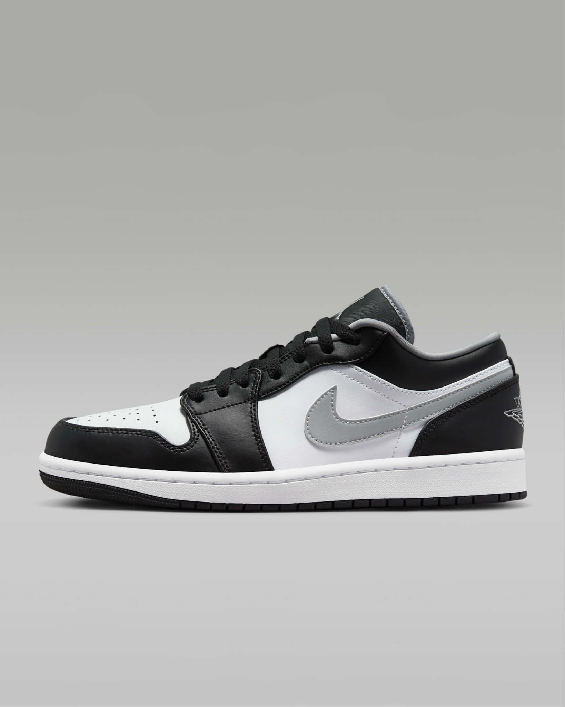
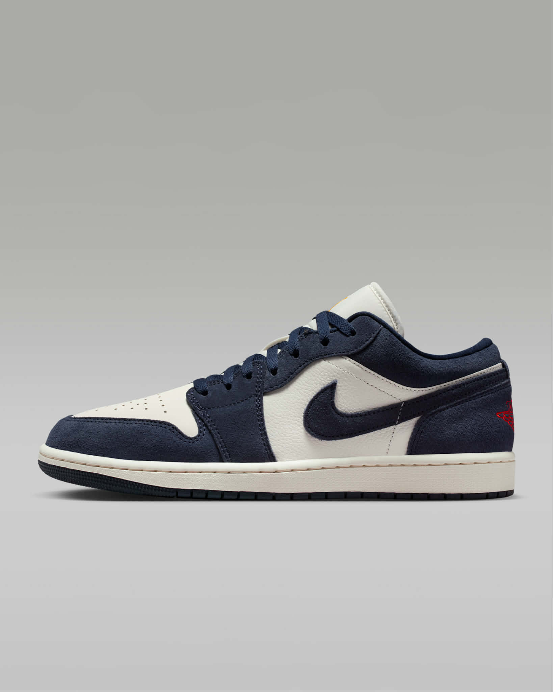

| HOME | SHOES | ||
| Men's Shoes | |||
|---|---|---|---|

Air Jordan 1 Low:₱6,395.00 This colorway is often referred to as the "Shadow 3.0" |
 Air Jordan 1 Low SE:₱7,295,00 This is a "Special Edition" (SE) release, which usually means. |
||